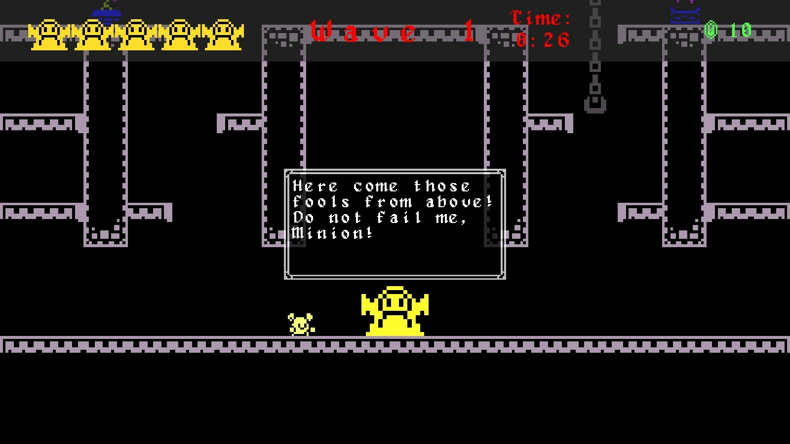
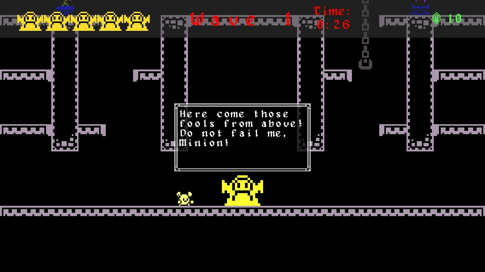

Unreleased Project
(for Taktyl Studios)
Developer
April 2025 - August 2025
During my internship with Taktyl Studios, I was tasked with creating a prototype for a character action game in Unreal Engine. This prototype was made to help pitch a video game based on an award winning Filipino graphic novel, and was also to be included as part of an initiative towards preserving the national martial art of Arnis.
I was responsible for programming the core functionality of the game and piecing together the
whole prototype using guidelines, design documents, and art assets provided to me by the studio.
For this prototype I implemented:
- player locomotion with the ability to walk, sprint, jump, and vault over ledges
- combat with light and heavy attacks and a variety of special moves
- enemy AI using behavior trees with attacks controlled via animation notifies
- a global enemy encounter controller and token system to control encounter difficulty
I paid attention to code cleanliness throughout this project, and also focused a large part of
my efforts on implementing features in ways that could easily be modified by designers without
having to interface directly with implementation.
As mentioned above, attacks are handled via animation notifies that can be attached
directly to the enemy and player attack montages. This system allows for designers to easily
modify variables like an attack's damage and range without having to directly open an enemy's
blueprint class. Being attached directly as an animation notify also allows for precise timing
with animations that can easily be modified in the event that an attack animation is replaced or
retimed in some way.
Player attack combos are also stored in a tree styled data structure with each attack having references
to various "next" attacks depending on the next player input. This system was made to enable designers
to easily create and modify different combo strings of heavy and light attacks plus pause combos
without having to directly deal with the underlying blueprints.
I designed everything this way so that, in the event that the project gets greenlit, this prototype could
be used as a workable base for other programmers and designers to work off of.


Throughout the project, I communicated with a designer to ensure an overall level of quality and adherence to the requirements. I was also monitored closely by higher-ups in the studio to ensure a consistent rate of progress over the time that I had to create the prototype.
 
